Table of Contents
- Introduction
- Statecharts example
- Checking DSL well-formedness during editing
- Sidenote: from EBNF grammar to Ecore model and back again
- Processing DSL statements beyond well-formedness checking
- Implementation of in-place translation
- Related Work
- Conclusions
- Acknowledgements
- Source Code
Introduction
More often than not, software development involves today more than one language: SQL, BPEL, and JSP are popular examples, but other notations (not always regarded as languages on their own) also express relevant functionality, for example the notations stating business rules, access control, and databinding between GUI forms and underlying model objects, among others.
Providing integrated IDEs for (combinations of) such Domain-Specific Languages (DSLs) has proven hard. A Java IDE aware of SQL would for example flag those embedded SQL statements that become invalid after refactoring the database schema. Supporting such scenarios is easier if both host and embedded languages are designed with cooperation in mind, as is the case with Microsoft's LINQ (Language INtegrated Query). Experience has also shown that any complex-enough DSL is doomed to re-invent constructs that are taken for granted in general-purpose languages (think of control-flow constructs in Oracle PL/SQL, in XSL, and in QVT-Operational), thus strengthening the case for integrated tool support.
The conventional wisdom around DSL tooling is that one may either:
- provide minimal compile-time checking of DSLs. This is the path followed by XML practice, with errors being discovered at runtime
when document instances are parsed and interpreted,
or - invest effort in developing dedicated plugins for editing DSLs with custom syntax (be it textual or diagram-based), checking at compile time the Abstract-Syntax-Trees (ASTs).
DSL2JDT the Internal DSL code can still be used in such IDE, as it depends only on the abstract syntax of the DSL, which is independent from concrete
syntax.
The internal DSL approach
One of the techniques covered by Martin Fowler in the online draft of his upcoming book on DSLs is Internal DSLs, which allow embedding DSL expressions in Java code. For example, the Guice framework for dependency injection allows writing code like:
public class MyModule implements Module {
public void configure(Binder binder) {
binder.bind(Service.class)
.to(ServiceImpl.class)
.in(Scopes.SINGLETON);
}
}
The Content Assist feature of the JDT and the type system of Java 5 are leveraged to enforce some of the well-formedness rules of the embedded DSL (Guice) when expressing ASTs for it in the host language (Java 5). Additionally, method chaining facilitates editing when used in conjunction with so called progressive interfaces: whenever the DSL grammar calls for a mandatory construct, the preceding method in the chain returns an interface with a single method declared in it (standing for the successor in lexical order in the underlying DSL grammar) so that the IDE offers a single choice. Using again the terminology described in more detail by Fowler, the resulting API is a Fluent Interface. Together with an Expression Builder they form the building blocks of an internal DSL API.
In terms of the familiar EMF Library example, the automatically generated Fluent Interface allows typing code snippets like the one depicted below. The example also shows that internal DSLs are useful as shorthand for any Ecore model, although in the rest of this article we focus on language metamodels only.
| 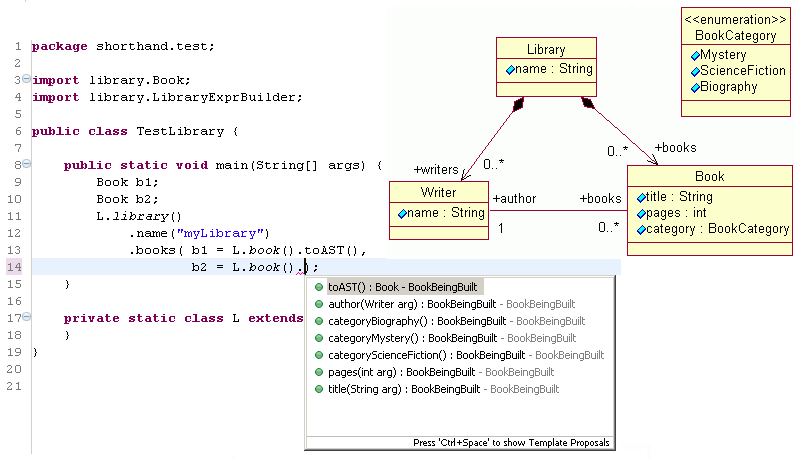 |
Fluent interfaces, by themselves, do not capture all relevant well-formedness rules (WFRs) of any but the simplest DSLs. For example, most imperative languages demand that: (a) "each variable usage must appear in scope of its single previous declaration", and (b) "duplicate names are to be avoided in the same namespace". As for modeling languages, two representative WFRs can be drawn from UML: (c) in class diagrams, cyclic inheritance is not allowed, and (d) in statecharts, a composite state consists of one or more regions, all of whose states must be uniquely named.
Our approach towards DSL embedding allows evaluating at compile-time such constraints, provided they can be discovered by the EMF
Validation Framework using reflection. Christian W. Damus covers in the article Implementing Model Integrity in EMF with MDT OCL how to annotate an .ecore model with constraints. For simplicity, OCL may
be left out initially and the validation methods completed manually. Examples are given later showcasing both alternatives for the
statechart DSL.
The combination of Fluent Interface and build-time well-formedness checking surpasses the "DSL in XML" approach in terms of usability and safety, moreover relying on mainstream technologies: Eclipse Ecore, Eclipse OCL, and Eclipse JDT. Additional techniques (in-place translation, statement-level annotations, and DSL-specific views) may be optionally adopted to further increase the usability of embedded DSLs. We report about our progress so far around them in section Processing DSL statements. But first, more examples of existing internal DSLs are given.
Instructions for the impatient: how to use DSL2JDT in 10 seconds
If you just can't wait to start using DSL2JDT, follow these steps:
- checkout the two plugin projects that make up
DSL2JDTfrom CVS as explained in the Source Code section- start a second Eclipse instance, launching it with the two plugins above enabled
- create a plugin project, create your
.ecoremetamodel in it and generate its corresponding.genmodel.- Open the
.genmodelfile with its editor (you may want to set theBase Packageproperty of the root package) and generate Model code (at the very least, more if you like).- right-click on
.genmodel, choose "Generate Embedded DSL".- a text file named
<rootPackageName>ExprBuilder.javais created in the same folder where the.genmodelis located. Move this Java file to the root Java package generated from the.genmodel.
| 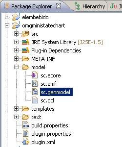 | 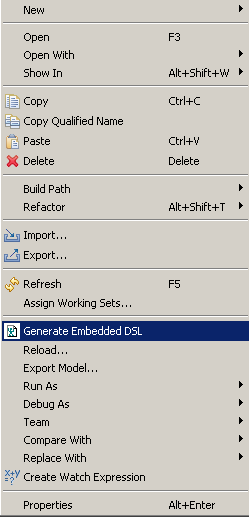 | 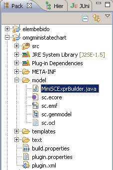 |
If you followed steps 1-6 above, you'll have a project similar to what
omgministatechart.zipdelivers out of the box!
Examples of existing internal DSLs
As far as we know, the APIs of all existing internal DSLs have been developed manually. The code snippets in this subsection (from the Quaere, Jequel, and KodKod projects) illustrate some frequent idioms. Basically, repetition of enclosing lexical contexts is avoided, thus reducing syntactic noise.
public class GettingStartedWithQuaere {
public static void main() {
City[] cities=City.ALL_CITIES;
Iterable<Group> groups =
from("city").in(cities).
group("city").by("city.getContinent()").into("g").
select("g");
for (Group group : groups) {
System.out.println(group.getKey());
System.out.println(group.getGroup());
}
}
}
public class JEQUEL {
interface ArticleBean {
int getArticleNo();
String getName();
}
public void testParameterExample() {
final Sql sql = Select(ARTICLE.NAME, ARTICLE.ARTICLE_NO)
.from(ARTICLE)
.where(ARTICLE.OID.in(named("article_oid"))).toSql();
final Collection articleDesc = sql.executeOn(dataSource)
.withParams("article_oid", Arrays.asList(10, 11, 12))
.mapBeans(new BeanRowMapper() {
public String mapBean(final ArticleBean bean) {
return bean.getArticleNo() + "/" + bean.getName();
}
});
assertEquals(1, articleDesc.size());
assertEquals("12345/Foobar", articleDesc.iterator().next());
}
}
public class KodKod {
/**
* Returns a formula stating that all vertices
* have at least one color, and that no two adjacent
* vertices have intersecting colors.
* @return a formula stating that all vertices
* have at least one color, and that no two adjacent
* vertices have intersecting colors.
*/
public Formula coloring() {
final Variable n = Variable.unary("n");
final Formula f0 = n.join(color).intersection(Color).some();
final Formula f1 = n.join(color).intersection(n.join(graph).join(color)).no();
return (f0.and(f1)).forAll(n.oneOf(Node));
}
}
In case you're craving for more details on how to manually build an embedded DSL, Kabanov and Raudjärv explain the design guidelines to achieve typesafe embeddings (examplified with SQL) in their paper Embedded Typesafe Domain Specific Languages for Java. (But you might want to finish reading this article first).
Statecharts example
For better or worse, statecharts have established themselves as the Hello World of model-driven tooling, and this article follows
that tradition. Being a graphical formalism, any usability goodies that embedding might provide should be welcomed with appreciation: a
basic statechart metamodel (Figure 3) devoid of any annotation for concrete syntax is given as sole input to DSL2JDT.
The screen capture in Figure 4 shows the resulting Expression Builder API being used to instantiate the telephone statechart from Figure 5.
| 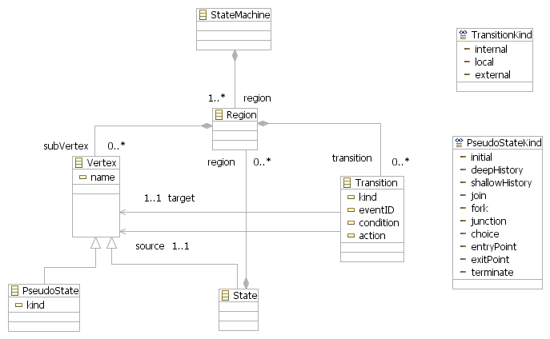 |
| 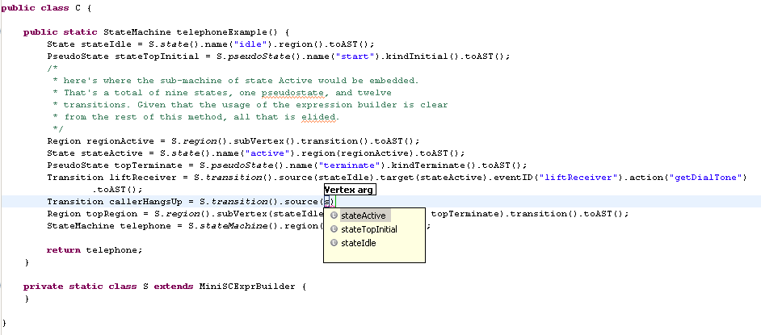 |
| 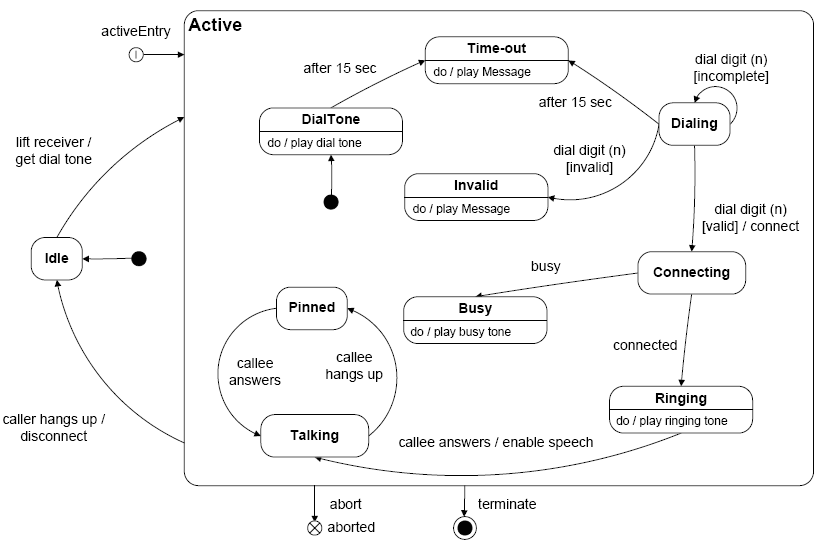 |
java.lang.Object, which are distracting. They can be filtered away with the Java > Type Filters preference page (that will elide them also in the Open Type dialog, quick fix and organize imports, but will not affect the Package Explorer and Type Hierarchy views).
What does the generated expression builder for the statechart DSL look like? Consider for example class Region
containing zero or more Vertex and zero or more Transition. At edit time, Content Assist should offer first subVertex(...)
as completion proposal (only). After accepting that suggestion, the next method in the chain should be transition(...) (only).
And that's just two structural features. Well, the fragment of the expression builder defining such API is reproduced below:
public class MiniSCExprBuilder {
 // start of the method chain for class Region
public static RegionBeingBuilt0 region() {
return new RegionBeingBuilt(miniSC.MiniSCFactory.eINSTANCE.createRegion());
}
// start of the method chain for class Region
public static RegionBeingBuilt0 region() {
return new RegionBeingBuilt(miniSC.MiniSCFactory.eINSTANCE.createRegion());
}
 // steps of the method chain
public interface RegionBeingBuilt0 {
public RegionBeingBuilt1 subVertex(miniSC.Vertex... items);
}
public interface RegionBeingBuilt1 {
public RegionBeingBuilt2 transition(miniSC.Transition... items);
}
public interface RegionBeingBuilt2 {
public miniSC.Region toAST();
}
// steps of the method chain
public interface RegionBeingBuilt0 {
public RegionBeingBuilt1 subVertex(miniSC.Vertex... items);
}
public interface RegionBeingBuilt1 {
public RegionBeingBuilt2 transition(miniSC.Transition... items);
}
public interface RegionBeingBuilt2 {
public miniSC.Region toAST();
}
 // the class holding state between method invocations in a chain
public static class RegionBeingBuilt
implements RegionBeingBuilt0, RegionBeingBuilt1, RegionBeingBuilt2 {
private final miniSC.Region myExpr;
RegionBeingBuilt(miniSC.Region arg) {
this.myExpr = arg;
}
public RegionBeingBuilt1 subVertex(miniSC.Vertex... items) {
this.myExpr.getSubVertex().clear();
this.myExpr.getSubVertex().addAll(java.util.Arrays.asList(items));
return this;
}
public RegionBeingBuilt2 transition(miniSC.Transition... items) {
this.myExpr.getTransition().clear();
this.myExpr.getTransition().addAll(java.util.Arrays.asList(items));
return this;
}
// the class holding state between method invocations in a chain
public static class RegionBeingBuilt
implements RegionBeingBuilt0, RegionBeingBuilt1, RegionBeingBuilt2 {
private final miniSC.Region myExpr;
RegionBeingBuilt(miniSC.Region arg) {
this.myExpr = arg;
}
public RegionBeingBuilt1 subVertex(miniSC.Vertex... items) {
this.myExpr.getSubVertex().clear();
this.myExpr.getSubVertex().addAll(java.util.Arrays.asList(items));
return this;
}
public RegionBeingBuilt2 transition(miniSC.Transition... items) {
this.myExpr.getTransition().clear();
this.myExpr.getTransition().addAll(java.util.Arrays.asList(items));
return this;
}
 public miniSC.Region toAST() {
return this.myExpr;
}
}
// ...
public miniSC.Region toAST() {
return this.myExpr;
}
}
// ...
As can be seen, three parts are generated for each concrete class:  a factory method that simply wallpapers over a factory invocation. The freshly instantiated
a factory method that simply wallpapers over a factory invocation. The freshly instantiated EObject is not directly
returned but wrapped first in a decorator (class 
RegionBeingBuilt
in this case) which selectively discloses update methods on the wrapped EObject. Such update methods are grouped into  batches (three in this case, from
batches (three in this case, from RegionBeingBuilt0 to RegionBeingBuilt2). The last invocation in a method
chain is 
toAST(), which unwraps the AST node
from its expression builder and returns it.
More details about the generated progressive interface
The choices offered by a progressive interface are not as linear as the example above might suggest. One of the heuristics applied by
DSL2JDT to improve usability involves optional fields. A contiguous run of optional fields is offered as a single batch of
options, allowing to spring over any of them. Choosing from Content Assist the mandatory constituent (the one coming up right after
the run of contiguous options) allows accessing the next batch of options. For example, in class Transition (Figure 6, left)
two mandatory structural features (source and target) are followed by the kind optional field. In
terms of Transition's progressive interface, the right pane of Figure 6 shows that after typing target() one may
either choose kind... or directly type the (mandatory) eventID(). After choosing one of the kind...
options the new batch of alternatives offered by Content Assist still contains eventID(), as their return type is TransitionBeingBuilt2.
Once the mandatory eventID() is chosen however, the offered progressive interface with a new batch of content suggestions will
be TransitionBeingBuilt3.
| 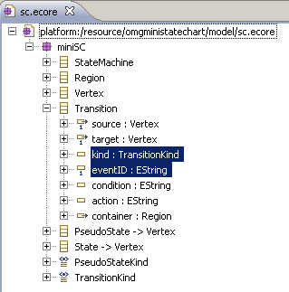 | 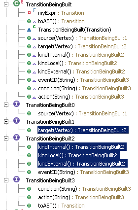 |
Other heuristics applied by DSL2JDT include:
- Classes owned over strong composition and declaring only primitive fields are instantiated with a single method invocation, where
the field values are received as arguments.
For example, a field
xyPoswith typePoint2Dwill be set with the method invocationxyPos(-1,1)rather than the more verbosesetXYPos(new Point2D(-1,1)).
- Alternative items, i.e. those resulting from an enumeration, result in content suggestions being packed in a single batch of
options.
For example, the alternatives for the
kindenumeration resulted in the methodskindLocal(),kindInternal(), andkindExternal()being generated by default (Figure 6). If the number of options becomes unwieldy, one may choose instead to have a single update method generated in the Expression Builder (an update method taking an enum literal as argument). This can be achieved by specifying a (GenModel or Ecore) annotation with sourceGymnastand key-value pair("terminal2method", "false")
- For boolean fields so called yes/no methods can be specified .
For example,
on()/off()are more readable in embedded DSL statements thansetOn(true)/setOn(false). The relevant (Ecore or GenModel) annotation has sourceGymnastand two key-value pairs:("yes", "methodNameToSetTrue")and("no", "methodNameToSetFalse"). This idiom also applies to "marker" reference fields, i.e. a field to the sole effect of conveying whether it isnullor not (the object pointed by a non-null reference having no fields of its own). This kind of marker field usually appears in Ecore models generated out of a (pure) EBNF grammar. Figure 7 depicts the Ecore and generated API parts to this story.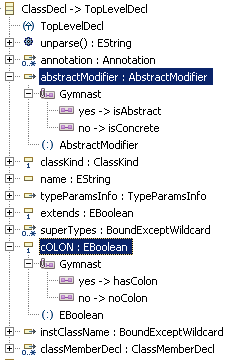 
Figure 7
- Progressive interfaces can be disabled.
Either on a per class or per package basis, so that all update methods are offered in a single batch by Content Assist. For disabling, an annotation with source
Gymnastand key-value pair("progressiveInterface", "false")should be specified (this was in fact used way back in Figure 1).
Besides relying on JDT Content Assist, another potential venue for speeding up typing of embedded DSL statements are fill-in-the-blanks templates, a capability that DSL2JDT as of now does not exploit (but feel free to extend our source code
to generate them from .genmodel).
Checking DSL well-formedness during editing
As stated in the introduction, we want to engage the IDE in checking the static semantics of DSL expressions. Two ways are feasible, which we dub The Pragmatic Way and The Grand Plan Way. We cover the former in this section and leave the latter for section Processing DSL statements (that section is much longer). In a nutshell, the infrastructure required for the second alternative is overkill for well-formedness checking, however it enables other use cases (in-place translation, statement-level annotations, and DSL-specific views).
DSL2JDTdo not strictly depend on EMF. If your target environment is POJO-only, you may set totruethe following.genmodeloptions: Suppress EMF Types, Suppress Meta Data, Suppress Model Tags. The ASTs thus built will be POJOs, and you'll have to devise a custom mechanism to check their well-formedness. We do not discuss this scenario further.
The pragmatic approach simply leverages existing JUnit support in JDT:
- Each group of embedded DSL statements (making up a DSL expression) is encapsulated in a dedicated Java method that returns the
self-contained AST, obtained by finishing a method chain with
toAST(). - a JUnit test is created for each method above, invoking the default EMF validation on the AST root node. That way, the particular WFRs of all the nodes in the tree will be evaluated, without having to enumerate them explicitly (EMF determines all the applicable validators using reflection).
- The following utility function encapsulates the invocation to EMF validation, from JUnit's
assertTrue(). Although not shown here, debugging the unit tests with an exception breakpoint ofAssertionErrorallows inspecting detailed diagnostic messages for each malformed AST node.
public class MyEcoreUtil {
public static boolean isWellFormed(EObject root) {
Diagnostician diagnostician = new Diagnostician();
final Diagnostic diagnostic = diagnostician.validate(root);
boolean res = diagnostic.getSeverity() == Diagnostic.OK;
return res;
}
// ...
}
For example, the static semantics for the telephone example from Figure 5 can be checked with:
public class TestTelephone extends junit.framework.TestCase {
public void testTelephoneExample() {
StateMachine dslExpr = C.telephoneExample();
assertTrue(MyEcoreUtil.isWellFormed(dslExpr));
}
}
EMF Validation will recursively validate owned parts, i.e. those objects reachable over containment associations (i.e., those
references having isContainment == true in the Ecore Sample Editor). Most associations in an AST metamodel are containment
associations, they capture the lexical nesting in a textual syntax for the DSL in question.
The particular WFRs to evaluate for each DSL construct can be given as Java or OCL. In both cases an annotation with source http://www.eclipse.org/emf/2002/Ecore
should be made on the constrained class, listing the name of the constraint methods (as shown in Figure 9). If no OCL is specified, the
generated validator method has to be completed manually as shown in Figure 8 for constraint noDuplicates in class Region.
| 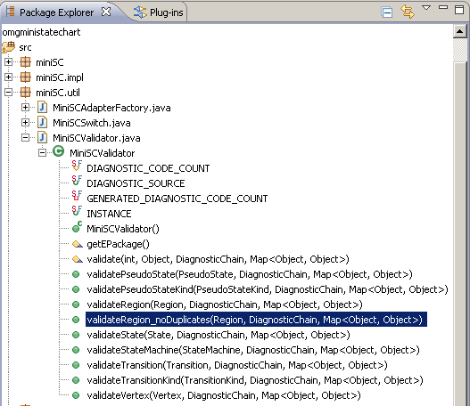 |
| 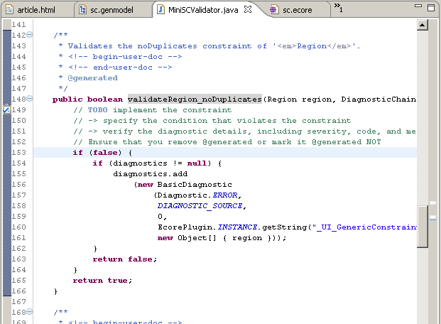 |
Alternatively, the method body for the validation method above can be generated from OCL as explained in the article Implementing Model Integrity in EMF with MDT OCL. The constraint "no duplicate names for states within a region" can be expressed in OCL as:
self.subVertex->forAll(s1 : Vertex |
self.subVertex->forAll(s2 : Vertex |
s1 <> s2 implies s1.name <> s2.name))
For that, an additional annotation with source http://www.eclipse.org/ocl/examples/OCL is made on Region,
as shown in Figure 9. The code generated in method validateRegion_noDuplicates will parse the OCL constraint and evaluate it
(not shown).
| 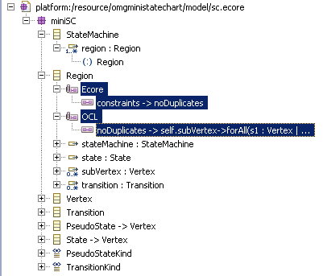 |
@Ecore(constraints="noDuplicates")
@"http://www.eclipse.org/ocl/examples/OCL"(
noDuplicates="
self.subVertex->forAll(s1 : Vertex |
self.subVertex->forAll(s2 : Vertex |
s1 <> s2 implies s1.name <> s2.name)))
")
class Region {
ref StateMachine#region stateMachine;
ref State#region state;
val Vertex[*]#container subVertex;
val Transition[*]#container transition;
}
|
Armed with this tutorial and with the
DSL2JDTgenerator (from the Source Code section), pick your DSL of choice, optionally declare OCL WFRs for it, and start embedding it in the Eclipse JDT!
The majority of the language metamodels available out there lack OCL-based WFRs (remember the story about the cobbler's children?). Those listed below not only include WFRs but also discuss them in some length:
- BPEL 1.1, http://www.cs.kent.ac.uk/pubs/2004/2027/content.pdf
- JPQL 1.0, http://www.sts.tu-harburg.de/~mi.garcia/pubs/atem06/JPQLMM.pdf
As long as tests are manually coded following the pattern above, all embedded DSL statements will be checked for well-formedness. If the developer overlooks testing some embedded expression, its well-formedness will be known only at runtime (potentially remaining as a bug waiting for happen). The problem is due to the opaque nature (as far as the JDT is concerned) of the embedded DSLs: there is no infrastructure so far to explore the Java code being edited, looking for occurrences of DSL embeddings to check, thus ensuring coverage of WFRs. Achieving such coverage automatically is possible with techniques belonging to The Grand Plan Way, the topic of the remaining sections of this article. Before delving into abstract syntax in those sections, we figure out where concrete syntax fits in the brave new world of internal DSLs.
Sidenote: from EBNF grammar to Ecore model and back again
We have been assuming all along that the input to DSL2JDT is the metamodel of a DSL, the metamodel that captures the
abstract syntax. After all, at the end of the day we want to process ASTs, right? Alas, there are exceptions to that: sometimes we need to
process Concrete Syntax Trees (CSTs). Let me explain.
In non greenfield scenarios it is often the case that an existing EBNF grammar is available, most likely with a dedicated text
editor. Such scenarios have prompted the development of tools to derive an Ecore model from a grammar. The obtained Ecore model can
be fed as input to DSL2JDT (being an Ecore model as any other, DSL2JDT won't tell the difference between one
representing abstract syntax vs. another representing concrete syntax) thus making possible their embedding in Java. Even if an existing
editor is available, embedding may still make sense, for example in the early iterations of porting their AST processing algorithms to EMF.
It has been our experience that embedding CSTs makes sense only when unparsing of the CSTs is needed (for example, to generate the input to
a legacy tool, a tool not using internally EMF).
The tools in the Textual Modeling Framework allow obtaining an .ecore model
out of an EBNF grammar. Those tools also generate parsing and unparsing operations, which are inverses of each other (modulo text layout) so
that regression tests like the following always pass:
- parse file
f1into EMF-based treee1- unparse
e1into filef2- parse
f2intoe2assert org.eclipse.emf.ecore.util.EcoreUtil.equals(e1, e2);
So we get an .ecore model from EBNF. Is it a "language metamodel"? Not really:
- when embedded in Java, the CSTs thus built are similar to those prepared by a parser, before the phase where usages are resolved to declarations (i.e. before their conversion to Abstract Syntax Trees)
- an Internal DSL purely generated from an EBNF grammar will lack any constraints to capture static semantics, so you'll have to write them down (which is easier done at the AST level rather than at the CST level)
But, is that a problem? Sometimes it's not. CSTs are ideal for generating structured text (for example, for consumption in a pipes
and filters architecture). Besides, the Textual Modeling Framework developers have extended EBNF
with constructs to specify usual patterns of usages-to-declarations resolving. So the obtained .ecore does allow such
references. Coming back to pure EBNF, an example of the CST vs. AST dichotomy for a non-toy DSL can be seen in the Eclipse OCL plugin, where
both OCLCST.ecore and OCL.ecore are available.
To complicate matters further, unparsing can also be done directly from a (well-formed) AST. Given that no layout information is kept there, some pretty-printing mechanism is desirable. Model-to-text proponents suggest dedicated languages (http://www.eclipse.org/modeling/m2t/). There are DSLs for pretty-printing too, for example one being added to Eclipse IMP (the Box language).
If faced with the alternatives ASTs vs. CSTs, the best choice may be both: before unparsing from a CST, such tree is computed by AST processing. For example, the pseudocode shown left in Figure 10 for a business process can be expanded into the BPEL code shown right. If only the "pseudocode" could be formalized into an embeddable DSL, then its AST could be translated into a CST for unparsing.
Continuing with the example, the DSL part (allowing expressing business processes) need not cover the full spectrum of BPEL (for
that, one can directly embed the BPEL metamodel). Rather, the pseudocode-variant could focus on expressing only best practices, which
usually amount to subsetting a language. Taking as example another choreography language, the use of XOR-gateways in BPMN programs may
express arbitrary (control flow) cycles, just like GOTO does in 3GL programs. A "pseudocode" DSL for business processes could
avoid the use of XOR-gateway constructs. The example in Figure 10 and the XOR-gateway observation are reproduced from the diploma thesis of David Schumm (in German).
With this, we conclude our sidenotes on concrete syntax. The remaining sections focus on the advanced uses cases around embedded ASTs, those beyond compile-time well-formedness checking with JUnit.
shipOrder := receive(); if (shipComplete) then shipNotice := shipRequest; send(shipNotice); else itemsShiped := 0; while (itemsShiped < itemsTotal) do ... |
<sequence>
<receive partnerLink="customer" operation="shippingRequest" variable="shipRequest">
<correlations>
<correlation set="shipOrder" initiate="yes" />
</correlations>
</receive>
<if>
<condition>
bpel:getVariableProperty('shipRequest','props:shipComplete')
</condition>
<sequence>
<assign>
<copy>
<from variable="shipRequest" property="props:shipOrderID" />
<to variable="shipNotice" property="props:shipOrderID" />
</copy>
<copy>
<from variable="shipRequest" property="props:itemsCount" />
<to variable="shipNotice" property="props:itemsCount" />
</copy>
</assign>
<invoke partnerLink="customer"
operation="shippingNotice" inputVariable="shipNotice">
<correlations>
<correlation set="shipOrder" pattern="request" />
</correlations>
</invoke>
</sequence>
<else>
<sequence>
<assign>
<copy> <from>0</from>
<to>$itemsShipped</to> </copy>
</assign>
<while>
<condition>
$itemsShipped <
bpel:getVariableProperty('shipRequest','props:itemsTotal')
</condition>
<sequence> ...
|
Processing DSL statements beyond well-formedness checking
Setting the stage: useful APIs for the task at hand
The JDT incrementally checks the static semantics of Java during editing. A similar capability for embedded DSLs can be achieved by implementing a compilation participant:
A new extension point [as of 3.2] (org.eclipse.jdt.core.compilationParticipant) allows plugins that are dependent onorg.eclipse.jdt.coreto participate in the Java build process, as well as in the reconciling of Java editors.
By implementing org.eclipse.jdt.core.compiler.CompilationParticipant and extending this extension
point, one can be notified when a build is starting, when a clean is starting, or when a working copy (in a Java editor) is being
reconciled. During these notifications, types can be added, changed or removed, build markers can be created, or errors can be reported to
the Java editor.
Code that participates in the build should in general be implemented with a separate Builder, rather than a CompilationParticipant. It is only necessary to use a CompilationParticipant if the build step needs to interact with the Java build, for instance by creating additional Java source files that must themselves in turn be compiled.
[ClassReconcileContext] ... A reconcile participant can get the AST for the reconcile-operation usinggetAST3(). If the participant modifies in any way the AST (either by modifying the source of the working copy, or modifying another entity that would result in different bindings for the AST), it is expected to reset the AST in the context usingresetAST().
A reconcile participant can also create and return problems using putProblems(String,
CategorizedProblem[]). These problems are then reported to the problem requestor of the reconcile operation.
These excerpts are reproduced from the Javadoc of CompilationParticipant and ReconcileContext .
What to do with the AST of a Java compilation unit once we have it? Samples answering that question can be found in the reports listed in subsection Inspection and manipulation of Java ASTs, under Related Work.
For the record, there are at least two other approaches (besides compilation participants) for performing Java language processing: (a) annotation processors and (b) an Eclipse workbench builder. Annotation processors are ruled out as they cannot explore the AST of Java method bodies, and thus cannot access the embedded DSL statements. A workbench builder can inspect the AST of the Java compilation units being built, and would otherwise be a viable solution were it not for one of the use cases of interest, in-place translation, where such Java AST is modified, as will be seen shortly.
Before getting into the discussion of a sample compilation participant, we review first by means of example the additional uses cases
around DSL embedding (in-place translation, statement-level annotations, and DSL-specific views). We believe that the additional
implementation effort can be justified if such functionality is encapsulated for reuse across DSLs. Although we're not there yet, this
section highlights the design decisions involved (you may interpret this as an invitation to contribute to this project). Unlike the DSL2JDT
generator, in-place translation is still in a prototype phase, and has not been checked into CVS.
In-place translation
GUI programming using APIs like Swing or JFace can get quite verbose, a situation that has sparked a number of GUI description languages (mostly in the form of XML dialects, usually for interpretation at runtime) such as XUL, AIUML, and XForms, with a longer list at http://en.wikipedia.org/wiki/List_of_user_interface_markup_languages. In terms of Eclipse RCP, the closest examples known to this author are Glimmer (which is Ruby-based and embedded) and StUIML (which is Ecore-based).
Such languages are prime candidates not only for embedding, but also for in-place translation: we want a JDT extension to expand (say) embedded XUL snippets into their verbose Swing (or JFace or ...) formulation. That way, Java code appearing afterwards may refer to the GUI widgets implicit in the GUI description snippet (for example, to wire event handlers to the widgets, as many GUI description languages only specify the structural and layout aspects of a user interface).
The idea is so compelling that others have already implemented it, which allows us to quote an example from their work and see what
adaptations are necessary in the context of DSL2JDT. The example we've chosen comes from the JavaSwul DSL, and is itself based on a Sun tutorial
example on setting up menus using Swing. The resulting GUI widgets are shown left in Figure 11, with the JavaSwul snippet for them shown
just below. Its Java counterpart (also shown in Figure 11, right) stretches over 63 lines and refers to classes JMenuBar, JMenu,
JMenuItem, JRadioButtonMenuItem, JCheckBoxMenuItem, and methods setMnemonic(), getAccessibleContext(),
setAccessibleDescription() (among others) as well as enumeration literals of non-obvious interpretation such as KeyEvent.VK_1
and ActionEvent.ALT_MASK. If in a hurry, the DSL formulation is easier to read and write than its Swing counterpart.
JavaSwul is accepted by a batch-compiler. The design of this DSL involves (a) extending the Java grammar with additional productions,
and (b) writing assimilators to desugar JavaSwul snippets into Java ASTs. The resulting embedded syntax looks better (once you've
managed to get it right without Content Assist ;-) and has more degrees of freedom than DSL2JDT's bag of tricks (which are
method chaining, static imports, variable length argument lists, and expression builders). On the plus side, the approach to embedding
favored by DSL2JDT does not require up-front knowledge of the productions in the Java grammar. Moreover, one could in
principle use a compilation assistant to behave as an assimilator (i.e., weave information gathered from the surrounding Java AST
nodes and the embedded snippets into the output).
|
//Where the GUI is created:
JMenuBar menuBar;
JMenu menu, submenu;
JMenuItem menuItem;
JRadioButtonMenuItem rbMenuItem;
JCheckBoxMenuItem cbMenuItem;
//Create the menu bar.
menuBar = new JMenuBar();
//Build the first menu.
menu = new JMenu("A Menu");
menu.setMnemonic(KeyEvent.VK_A);
menu.getAccessibleContext()
.setAccessibleDescription(
"The only menu in this program that has menu items");
menuBar.add(menu);
//a group of JMenuItems
menuItem = new JMenuItem("A text-only menu item", KeyEvent.VK_T);
menuItem.setAccelerator(KeyStroke
.getKeyStroke( KeyEvent.VK_1, ActionEvent.ALT_MASK));
menuItem.getAccessibleContext()
.setAccessibleDescription( "This doesn't really do anything");
menu.add(menuItem);
menuItem = new JMenuItem("Both text and icon",
new ImageIcon("images/middle.gif"));
menuItem.setMnemonic(KeyEvent.VK_B);
menu.add(menuItem);
menuItem = new JMenuItem(new ImageIcon("images/middle.gif"));
menuItem.setMnemonic(KeyEvent.VK_D);
menu.add(menuItem);
//a group of radio button menu items
menu.addSeparator();
ButtonGroup group = new ButtonGroup();
rbMenuItem = new JRadioButtonMenuItem("A radio button menu item");
rbMenuItem.setSelected(true);
rbMenuItem.setMnemonic(KeyEvent.VK_R);
group.add(rbMenuItem);
menu.add(rbMenuItem);
rbMenuItem = new JRadioButtonMenuItem("Another one");
rbMenuItem.setMnemonic(KeyEvent.VK_O);
group.add(rbMenuItem);
menu.add(rbMenuItem);
//a group of check box menu items
menu.addSeparator();
cbMenuItem = new JCheckBoxMenuItem("A check box menu item");
cbMenuItem.setMnemonic(KeyEvent.VK_C);
menu.add(cbMenuItem);
cbMenuItem = new JCheckBoxMenuItem("Another one");
cbMenuItem.setMnemonic(KeyEvent.VK_H);
menu.add(cbMenuItem);
//a submenu
menu.addSeparator();
submenu = new JMenu("A submenu");
submenu.setMnemonic(KeyEvent.VK_S);
menuItem = new JMenuItem("An item in the submenu");
menuItem.setAccelerator(KeyStroke.getKeyStroke(KeyEvent.VK_2,
ActionEvent.ALT_MASK));
submenu.add(menuItem);
menuItem = new JMenuItem("Another item");
submenu.add(menuItem);
menu.add(submenu);
//Build second menu in the menu bar.
menu = new JMenu("Another Menu");
menu.setMnemonic(KeyEvent.VK_N);
menu.getAccessibleContext()
.setAccessibleDescription( "This menu does nothing");
menuBar.add(menu);
frame.setJMenuBar(theJMenuBar);
|

Statement-level annotations
Several language processing applications call for decorating Java programs with additional structured information. A lightweight approach to providing such metadata (short of extending Java syntax) involves defining custom annotations. These and other usages of annotations will only increase. Two examples can be mentioned:- As part of the ongoing JSR-308 (Annotations on Java types), extensions to the Java 7 syntax are proposed: http://groups.csail.mit.edu/pag/jsr308. The current prototype patches OpenJDK for parsing and for generating bytecode in an extended class format.
- Similarly, Harmon and Klefstad propose a standard for worst-case execution time annotations at the statement level, metadata that is important for Real-Time Java
- static analyses around references:
@NonNull,@Immutable,@ReadOnly. http://groups.csail.mit.edu/pag/pubs/ - bug-finding and verification tools such as JML which extend Java with pre- and postconditions, loop and class invariants, and behavioral interfaces (The JDT vs. non-JDT ways to extend Java syntax for JML are compared in this report)
- security-typed languages such as Jifclipse
As we have seen, embedded DSLs are a non-intrusive way to enrich a Java program with non-Java information. From the point of view of language processing, they lower the cost of proofs of concept. If implemented together with the other use cases described in this section, the resulting IDE extensions are also comparable in usability with dedicated IDEs, as the additional language constructs they manipulate are just that: syntactic extensions to Java, not completely new grammars.
DSL-specific views
Some graphical notations are considered standard, with textual counterparts playing a minor role although they convey the same
information (for example, musical notation vs. MIDI sequences, bond diagrams vs. chemical formulas, etc.) In these cases, the usability of
an embedded DSL would be increased by displaying alongside the textual formulation a read-only view of its 2D or 3D representation. This may
be derided as a poor man's WYSIWYG, but as with DSL2JDT in general we see instead a lot of leverage being gained from a
no-frills architecture. And not to be forgotten, textual notations improve the accessibility of IDE tooling for the visually impaired.
In fact, some Eclipse-based plugins already adopt this "editable text mapped to readonly diagram" metaphor, only that one-way view update is triggered by the build process or a user action. This to make sure that the data source has reached a stable state, unlike the case during interactive editing. For example, the TextUML plugin follows that metaphor, as shown below, with the PDE Dependency Visualization tool being another case in point.
package shopping_cart; import dataType; import inventory; class Cart end; class CartItem end; association CartItemProduct navigable role item : CartItem[*]; role product : Product[1]; end; aggregation CartHasItems navigable role cart : Cart[1]; navigable role item : CartItem[*]; end; end. |
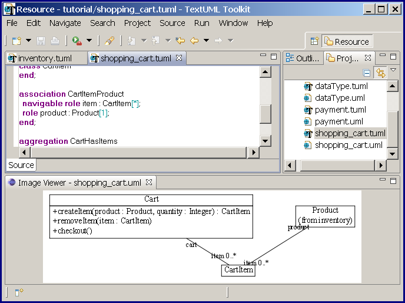 |
Given that 2D graph layout libraries are available for Eclipse (for example, GraphViz and Zest) we believe that a subset of the mapping files created as part of a GMF project are enough to realize the embedded-DSL-to-diagram use case in the JDT.
In order to bring the preceived meaning of a program closer to its intended meaning, Andrew Eisenberg proposed as part of his PhD an architecture for Eclipse text editors with presentation extensions, which may be used in conjunction with DSL embeddings (as shown in Figures 13 and 14). More details can be found in his paper Expressive Programs Through Presentation Extension.
| 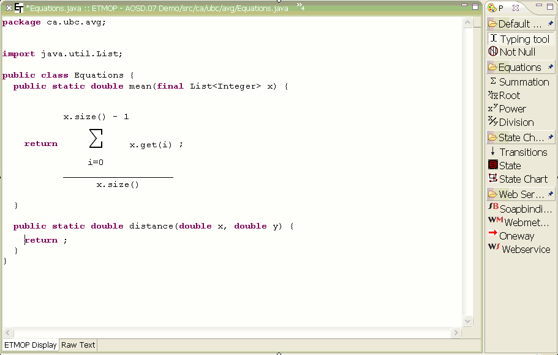 |
| 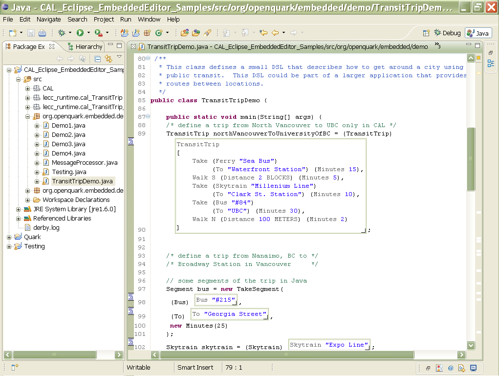 |
Implementation of in-place translation
Of the three advanced use cases, the one we would like to see implemented first is in-place translation. The previous summary of the
extension point for compilation participants is augmented in this section with an example that shows (a) how to identify Java methods marked
with the ReturnsEmbeddedDSL annotation, and (b) how to visit the AST of their method bodies. We stop short of translating the
embedded DSL (because we're working on that, and we couldn't wait to let others know about our progress with DSL2JDT so far).
ReturnsEmbeddedDSL
public class MyCompilationParticipant extends CompilationParticipant {
@Override
public boolean isActive(IJavaProject project) {
return true; // springs into action for all Java projects
}
@Override
public void reconcile(ReconcileContext context) {
super.reconcile(context);
try {
org.eclipse.jdt.core.dom.CompilationUnit ast = context.getAST3();
org.eclipse.jdt.core.dom.ASTVisitor myVisitor = new MyVisitor(); // see declaration below
for (Object oTypeDecl : ast.types()) {
if (oTypeDecl instanceof org.eclipse.jdt.core.dom.TypeDeclaration) {
TypeDeclaration td = (TypeDeclaration) oTypeDecl;
for (MethodDeclaration md : td.getMethods()) {
for (Object oModifier : md.modifiers()) {
if (oModifier instanceof org.eclipse.jdt.core.dom.Annotation) {
Annotation ann = (Annotation) oModifier;
String fqn = ann.getTypeName().getFullyQualifiedName();
if ("dsl2jdt.annotation.ReturnsEmbeddedDSL".equals(fqn) ||
"ReturnsEmbeddedDSL".equals(fqn)) {
addSampleProblem(ast, md, context);
}
}
}
}
}
}
ast.accept(myVisitor);
} catch (JavaModelException e) {
e.printStackTrace();
}
}
private void addSampleProblem(CompilationUnit ast,
MethodDeclaration md, ReconcileContext context) {
char[] originatingFileName = ast.getJavaElement().getPath().toOSString().toCharArray();
String message = "default dsl2jdt error message";
int severity = ProblemSeverities.Error;
int startPosition = md.getName().getStartPosition();
int endPosition = startPosition + md.getName().getLength();
int line = -1;
int column = -1;
EmbeddedDSLProblem pro = new EmbeddedDSLProblem(
originatingFileName, message, severity, EmbeddedDSLProblem.NO_ARGUMENTS, severity,
startPosition, endPosition, line, column);
CategorizedProblem[] problems = new EmbeddedDSLProblem[] { pro };
context.putProblems(EmbeddedDSLProblem.DSL2JDT_PROBLEM_MARKER, problems);
// see also IJavaModelMarker
}
@Override
public void buildStarting(BuildContext[] files, boolean isBatch) {
// TODO Auto-generated method stub
super.buildStarting(files, isBatch);
}
}
package compa.basic;
import org.eclipse.jdt.core.dom.SimpleName;
public class MyVisitor extends org.eclipse.jdt.core.dom.ASTVisitor {
public boolean visit(org.eclipse.jdt.core.dom.MethodInvocation inv) {
org.eclipse.jdt.core.dom.Expression rcvr = inv.getExpression();
// null if implicit 'this' call
System.out.println(inv);
if (rcvr == null) { // skip
return false; // don't bother looking at children (actual arguments)
} else if (!(rcvr instanceof org.eclipse.jdt.core.dom.SimpleName)) {
return true; // examine children (actual arguments)
}
org.eclipse.jdt.core.dom.SimpleName rcvrNm = (SimpleName) rcvr;
org.eclipse.jdt.core.dom.IBinding rcvrBinding = rcvrNm.resolveBinding();
System.out.println(rcvrBinding);
return true;
}
public boolean visit(org.eclipse.jdt.core.dom.MethodDeclaration node) {
return true;
}
public boolean visit(org.eclipse.jdt.core.dom.TypeDeclaration node) {
return true;
}
}
Related Work
Language tooling is a vast field. We summarize four areas directly related to DSL embedding: (a) proposed embeddings in other languages (Scala and Ruby), (b) well-formedness checking over XML artifacts, (c) inspection and manipulation of Java ASTs, and (d) the competing approach of IDE generation.DSL Embedding in Scala and Ruby
The syntax of Java 5 contributes to the readability of internal DSLs (variable length argument lists, static imports). Still, DSLs
embedded in Java cannot circumvent the subject.verb(object) bias of the language: no additional infix operators can be defined
nor existing ones overloaded. In Scala, binary operators can be overloaded. The resulting advantages for DSL embedding are reported by
Dubochet in this paper. In turn, DSL embedding in functional
languages has a long tradition; Leijen and Meijer were already reporting in 1999 how to embed
SQL in Haskell. Although superficially similar to other embedding efforts like SQL/J, the DSL embeddings we're talking about do not require
modifying the front-end of a compiler, as is the case with SQL/J.
DSL embedding is also popular with dynamically typed languages. Recent examples in Ruby include:
- Glimmer, an embedding of a high-level language for JFace/SWT programming
- embedding SVG: SVuGy and RVG
Both Scala and Ruby allow for a more compact notation, and the same techniques reported here can be applied in their respective IDEs to take care of well-formedness checking at compile time. That might suggest they are a better choice for DSL embedding. We see it differently. To us, what all these examples have in common is the tension between language-level as opposed to IDE-level extensibility, a matter that exceeds the particular host-embedded language pair being considered. Our reasoning can be summarized as follows: as long as the JDT (including extensions) allows for reasonable solutions, it pays off to stick with it for DSL embedding. Or maybe it's just me who don't know how to write auto-morphing code in Scala ("ASTs as first-class citizens"). In any case, the debate will likely go on among the language camps.
Besides, any improvements to Content Assist in JDT can be leveraged by all DSL embeddings in Java. For example, ideas around API completion as a planning problem have been explored in Prospector. Unlike with custom generated IDEs, we benefit from all those improvements for free.
Static analysis of XML artifacts
The proliferation of XML dialects has prompted the development of tools to check good old static semantics. A tool in this problem space is SmartEMF, being developed by Hessellund as part of his PhD. He identifies typical kinds of integrity constraints to check across the XML artifacts developed for consumption by some framework (for example, referential integrity constraints across configuration files in projects extending the Apache Open for Business (OFBiz) framework). Once such constraints have been made explicit, SmartEMF takes charge of checking them. Additionally, those editing operations that are feasible for the current editing state are found, much like Content Assist works in the JDT:
Given a portfolio of metamodels specified in SmartEMF, i.e., DSLs conforming to Ecore, we can represent languages, domain constraints, and models in a uniform way. All artifacts are mapped into a single constraint system implemented in Prolog that facilitates constraint checking and maintenance, and allows us to infer possible editing operations on a set of models.
Anders Hessellund. SmartEMF: Guidance in Modeling Tools. Doctoral Symposium, OOPSLA'07, Montreal, Canada, October
2007.
http://www.itu.dk/people/hessellund/work/Hessellund07b.pdf
Proposals are regularly made around non-XML syntaxes for XML dialects, a case in point for XUL (GUI description language) is the shorthand syntax Compact XUL. A once-and-for-all solution to this recurrent problem is offered by Dual Syntaxes: http://www.brics.dk/~amoeller/papers/xsugar/journal.pdf
Other Apache frameworks offer a choice between XML and embedded syntax. For example, the Apache Camel platform supports the patterns for Enterprise Application Integration (EAI) catalogued by Hohpe and Woolf. An analysis of this approach is reported by Pascal Kolb. This DSL for EAI is interesting as it has been given a visual notation (in the book by Hohpe and Woolf), and two textual notations (XML and Java-embedded, in the Camel project). Yet all these notations share the same abstract syntax.
Inspection and manipulation of Java ASTs
The SpoonJDT tutorial contains examples of in-place code modifications (not in-place translations, however) such as adding Javadoc and preconditions to existing methods.
The processing of ASTs is the focus of the following reports:
- Robert M. Fuhrer, Static Analysis for Java in Eclipse
- Thomas Kuhn, Olivier Thomann. Abstract Syntax Tree. Eclipse Technical Article,
- Tobias Widmer. Unleashing the Power of Refactoring. Eclipse Technical Article,
- Manoel Marques Exploring Eclipse's ASTParser: How to use the parser to generate code. DeveloperWorks article.
- ASTView, visualization of AST of Java source file. http://www.eclipse.org/jdt/ui/astview/index.php
- Other plugins involving code management: http://eclipse-plugins.info/eclipse/ plugins.jsp?category=Code+mngt
Checking Java source code beyond static semantics is the realm of tools like FindBugs, which operates in a batch manner. Other tools however perform background yet non-incremental checks, as implemented by EzUnit and by the Continuous Testing Plug-in for Eclipse:
Continuous testing uses excess cycles on a developer's workstation to continuously run regression tests in the background, providing rapid feedback about test failures as source code is edited. It reduces the time and energy required to keep code well-tested, and prevents regression errors from persisting uncaught for long periods of time.
Competing approach: IDE generation
An IDE is part of a language. Error messages are part of a language. Interacting with other systems, written in other languages, is part of a language. They're all part of the interface of the language. And the interface is everything.
Jonathan Tran, December 2007, http://plpatterns.blogspot.com/2007/12/1-2-n.html
Before getting involved with Internal DSLs and starting the DSL2JDT tool, I spent my fair amount of time with IDE
generators. So I guess a comparison is in order. Here it goes.
The generation of custom text editors is an active field. The following is a partial list (in alphabetic order) of projects offering such capability:
- MontiCore, http://www.sse-tubs.de/monticore/
- Sdf2imp, https://svn.strategoxt.org/repos/WebDSL/imp/trunk/
- TCS, http://wiki.eclipse.org/index.php/TCS, part of the Eclipse Textual Modeling Framework (TMF)
- TEF, http://www2.informatik.hu-berlin.de/sam/meta-tools/tef/index.html
- xText, http://wiki.eclipse.org/Xtext, part of the Eclipse Textual Modeling Framework (TMF)
The NetBeans camp is also doing some neat work. To make everyone happy, that's listed too:
- Generic Languages Framework (Project Schliemann), http://wiki.netbeans.org/Schliemann
By itself, a custom text editor generated from a grammar alone does not enforce the static semantics of the DSL (which by definition, are those well-formedness rules that exceed the expressive power of the grammar). So some additional coding is necessary. Those text editors internally maintaining an Ecore-based representation of the AST simplify the integration of such additional code.
The Eclipse IDE Meta-Tooling Platform Eclipse IMP goes beyond the generators above in that it aims at generating debugging infrastructure, moreover enabling the integration of complex analyses, such as control or data-flow based. The integration of translation capabilities remains however the task of the developer. Eclipse IMP is rather unique in addressing user-provided analyses, which can get quite elaborate very quickly. For example, a web search for the phrases "sql injection" and "static analysis" will return papers describing such analyses, ready for implementation.
The ASTs we embed with DSL2JDT have all been self-contained: their terminals are compile-time constants. We also skipped
on providing any kind of refactoring support for the embedded DSL, as they are necessarily DSL-specific. Similarly, staged compilation,
partial evaluation, and weaving (to account for the surrounding Java AST nodes) are all very interesting yet unsupported use cases from the
DSL2JDT perspective. Completing the infrastructure put forward in this article is a first step towards supporting those use
cases for custom DSLs in JDT.
Conclusions
We see many application areas for embedded DSLs, with the discussion about in-place translation and DSL-specific views just showing some of the possibilities. All along we've tried to maintain the main value proposition of well-designed DSLs: offering an easily consumable form of expert knowledge. We think that a Java embedding makes a DSL only easier to consume.
In particular, the capability to perform in-place translation brings together two seemingly opposite camps: those favoring "abstractions in DSLs" and those promoting design patterns. As we have seen, in-place translation keeps side by side the source DSL statements and their Java translation (which follows the design patterns captured by the DSL implementation).
Open platforms like Eclipse and EMF (and their communities) make possible the kind of cross-pollination that DSL2JDT has
benefited from. Now it's your turn to take these techniques to a next level.
Acknowledgments
An initial version of the statechart example was developed by Paul Sentosa as part of his master thesis on generation of text editors for custom DSLs. The concepts in Martin Fowler's online notes on Internal DSL acted as a catalyzer to developDSL2JDT. The reviewers in bug
234003 discovered bugs in early versions of DSL2JDT and provided useful examples and ideas on DSL embeddings.
Source Code
DSL2JDTcan be downloaded from CVS (useranonymous, hostdev.eclipse.org, repository path:/cvsroot/modeling). And thenHEADorg.eclipse.emforg.eclipse.emf.emfaticplugins- check out
org.eclipse.gymnast.generators.embeddeddsl - check out
org.eclipse.gymnast.generators.embeddeddsl.ui
-
The Statechart example is available for import into the workspace as a zipped Eclipse project:
omgministatechart.zip